LA AMAZONIA DEL ECUADOR
La Amazonía ecuatoriana es una de las cuatro regiones naturales del Ecuador y forma parte de la gran cuenca del Amazonas, el bosque tropical más extenso y biodiverso del mundo. En Ecuador, esta región es conocida también como el Oriente , y es rica en biodiversidad, cultura ancestral, recursos hídricos y paisajes naturales
Ubicación de la Amazonía ecuatoriana
Se encuentra en el este del Ecuador, por eso también se le llama "Región Oriental" o simplemente "ElProvinci de la Amazonia
- Sucumbios capital Loja
- Orellana capital Francisco de Orellana
- Napo capital Tenali>
- Pastaza capital El Puyo
- Zamora Chinchipe capital Zamora
- Morona Santiago capital Macas

Clima
La Selva Amazónica en Ecuador es una región tropical que cruza el Ecuador. Por lo tanto, no debería sorprender que el clima sea típicamente húmedo, con una combinación de sol fuerte y lluvias intensas.
-
TEMPORADA DE LLUVIAS
- Meses del año: Marzo a julio.
- Temperatura alta promedio: 28 grados centígrados (82.4 grados Fahrenheit).
- Precipitación mensual promedio: 5.32 pulgadas, 16 días de lluvia.
- Humedad promedio: 86%.
- Nivel de agua: Alta.
- Variación de la Temporada de Lluvias Cuyabeno: Febrero a abril
- Meses del año: Diciembre a febrero.
- Temperatura alta promedio: 30 grados centígrados (86 grados Fahrenheit).
- Precipitación mensual promedio: 4.55 pulgadas, 13.4 días de lluvia.
- Humedad promedio: 80%.
- Nivel de agua: Bajo.
- Variación de la Temporada de Lluvias Cuyabeno: mayo a octubre.
- Meses del año: agosto a noviembre.
- Temperatura alta promedio: 31 grados centígrados (88 grados Fahrenheit).
- Precipitación mensual promedio: 3.46 pulgadas, 13.5 días de lluvia.
- Humedad promedio: 77%.
- Nivel de agua: Variado.
- Variación de la Temporada de Lluvias Cuyabeno: Noviembre a enero.
Clima Amazonico En Ecuador: Una historia de tres estaciones.
Las temperaturas y la humedad del Amazonas bajan un poco durante las lluvias, lo que hace que los
días sean más cómodos para viajar y explorar. Por supuesto, la otra cara de la moneda es que los
visitantes deben ir preparados para mojarse durante las lluvias
Las plantas y la vegetación son más exuberantes y el bosque realmente cobra vida. Algunas especies
animales también son más activas durante esta temporada, cuando comienza el cortejo y la anidación.

ESTACION SECA
Aunque en realidad no existe una estación totalmente seca en la selva amazónica, los meses más secos
van desde diciembre hasta febrero/marzo.
Durante la estación seca, el bosque recibe menos lluvia y las temperaturas se elevan hasta 95 o
incluso 100 grados Fahrenheit. De vez en cuando hay chubascos que alivian temporalmente el calor y
la humedad.
La gran ventaja de visitar la Amazonía ecuatoriana durante la estación seca es que es menos probable
que la lluvia interrumpa sus actividades y es menos probable que se empape.
La desventaja es que los niveles de los ríos suelen bajar, lo que complica la navegación en canoa.
Pero los senderos son abiertos y menos embarrados, por lo que es hora de explorar la jungla a pie.
ENTRE TEMPORADA
También conocida como temporada media, la temporada climática intermedia amazónica de Ecuador cubre
los meses restantes del año.
¿Qué deben esperar los visitantes de la temporada climática “intermedia”? En pocas palabras,
patrones climáticos impredecibles.
Estos son los meses del año en los que la selva tropical está en proceso de cambiar de húmeda a
seca, por lo que debe esperar una combinación de lluvia y sol, con temperaturas variables.
Los niveles de agua de los ríos también varían durante esta estación cambiante, pero deberían ser
menos extremos que durante otras estaciones.

La economia de la amazonia
La economía de la Amazonía ecuatoriana se basa principalmente en la explotación de recursos no renovables, como el petróleo y la minería (oro y cobre), que son los principales motores económicos. A esto se suman actividades como la agricultura, ganadería, pesca, explotación forestal y el turismo, aunque algunas presentan problemas de sostenibilidad y bajo desarrollo debido a la falta de infraestructura.
Principales actividades económicas
- Sector extractivo La extracción de petróleo es la actividad económica más importante de la región, especialmente en provincias como Orellana y Sucumbíos. La minería, sobre todo en Zamora Chinchipe, también es clave por la exportación de minerales como cobre y oro.
- Agricultura y ganadería Estas son actividades fundamentales, pero a menudo no sostenibles. Se basan en cultivos como yuca, plátano, cacao, café, arroz y maíz, y también la ganadería.
- Pesca y explotación forestal La pesca es una actividad primordial, y la explotación forestal también forma parte de la economía regional.
- Turismo El ecoturismo es una actividad con potencial de crecimiento. Se busca promoverlo, especialmente a través del ecoturismo comunitario, aunque aún enfrenta desafíos.
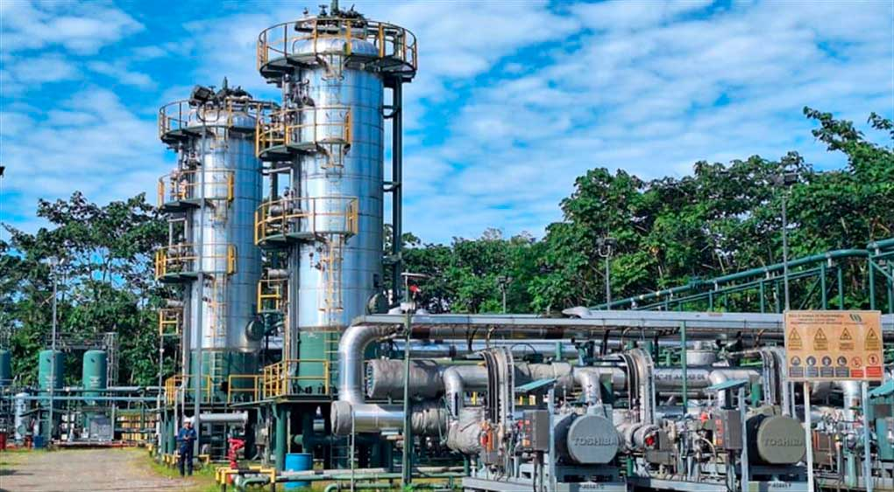
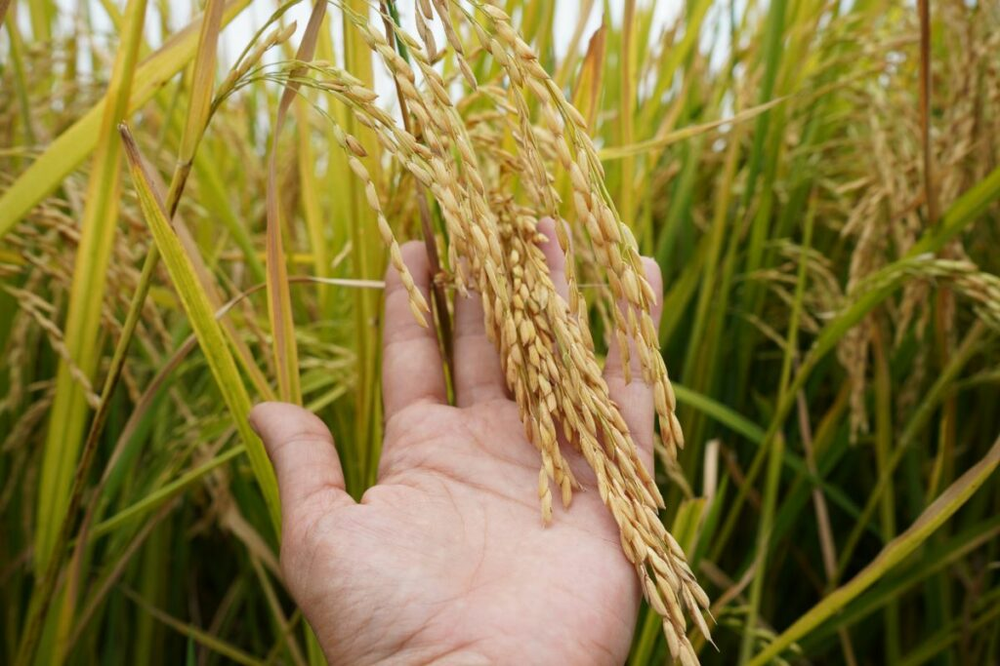


 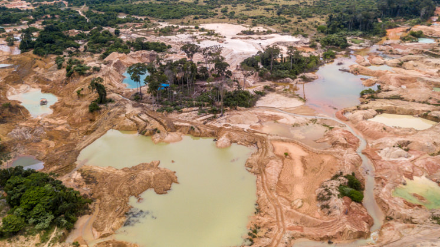
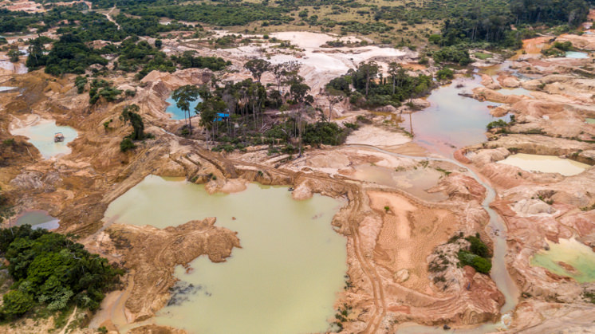

Cultura de la amazonia
Pueblos indígenas amazónicos
En Ecuador, la Amazonía (también conocida como "Región Oriental") está habitada por varios pueblos indígenas reconocidos oficialmente ,Cada uno tiene su propia cultura, lengua, vestimenta, medicina ancestral y forma de vida.
- Kichwa amazónicos
- Shuar
- Achuar
- Huaorani (Waorani)
- Siona
- Secoya
- Cofán
- Zápara
Los Kichwa amazónicos son un pueblo indígena que habita la región amazónica de Ecuador, Perú y Colombia, siendo una de las etnias más grandes de la Amazonía ecuatoriana. Su cultura se basa en la convivencia familiar, las tradiciones ancestrales, el respeto a la cosmovisión y el profundo apego a la selva.

Los shuar son un pueblo indígena amazónico, conocido por su pasado guerrero y su profunda conexión con la naturaleza. Habitan principalmente en la selva alta de Ecuador (provincias de Morona Santiago, Zamora Chinchipe y Pastaza) y en menor medida en el norte de Perú. El término "shuar" significa "gente" o "persona" en su idioma, el shuar-chicham
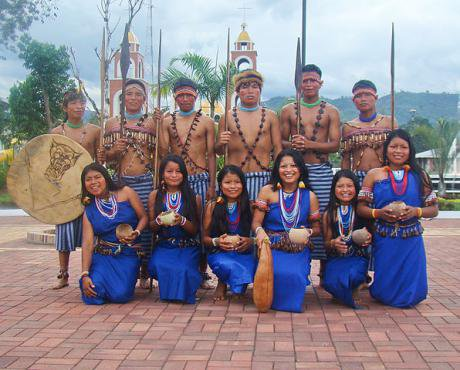
Los Kichwa amazónicos son un pueblo indígena que habita la región amazónica de Ecuador, Perú y Colombia, siendo una de las etnias más grandes de la Amazonía ecuatoriana. Su cultura se basa en la convivencia familiar, las tradiciones ancestrales, el respeto a la cosmovisión y el profundo apego a la selva.
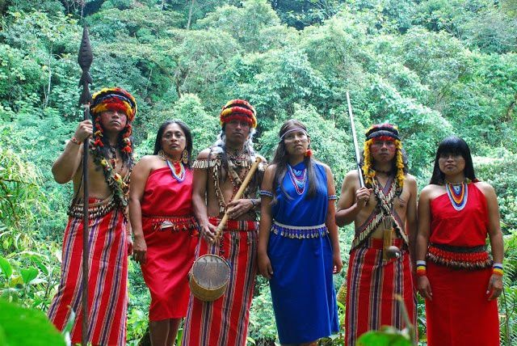
Los Huaorani, también conocidos como Waorani, Waos o Waodani, son un pueblo indígena que habita en la Amazonía ecuatoriana, principalmente en las provincias de Orellana, Napo y Pastaza. Su territorio ancestral incluye gran parte del Parque Nacional Yasuní. Su autodenominación es , que significa

Los Siona son un pueblo indígena de la Amazonía que habita en la frontera entre Colombia y Ecuador, principalmente en las riberas del río Putumayo. Su cultura está fuertemente ligada a la naturaleza, y su supervivencia ha estado amenazada por el conflicto armado y la actividad extractiva.

Los Secoya, también conocidos como Siekopa'ai, son un pueblo indígena de la Amazonía que habita en los territorios de Ecuador y Perú, principalmente en la provincia de Sucumbíos, Ecuador, y en el norte de Perú. Su lengua se llama Pai'koka y es del grupo tucano occidental. Los Secoya son conocidos por su profundo conocimiento de las plantas medicinales, su rica cosmovisión y sus prácticas tradicionales.

El pueblo Cofán es un pueblo indígena de la Amazonía, ubicado en la frontera entre Colombia y Ecuador. Tradicionalmente habitan en la zona del río Guamuez en Colombia y del río Aguarico en Ecuador, se dedican a la caza y la pesca, y su cultura tiene una fuerte conexión espiritual con el yagé, con el jaguar y la boa como figuras importantes en su cosmología.

Los Zápara son un pueblo indígena de la Amazonía que vive principalmente en la provincia de Pastaza, Ecuador, con presencia también en Perú. Están reconocidos por la UNESCO como Patrimonio Cultural Inmaterial de la Humanidad debido a su idioma en peligro de extinción y su profunda conexión con la selva, que entienden como una relación de cuidado y armonía con la naturaleza. Históricamente, han enfrentado drásticas reducciones de población debido a la explotación de recursos y las enfermedades, lo que los impulsa a luchar por la preservación de su territorio y cultura.

Gastronomia de la Amazonia
La gastronomía de la Amazonía ecuatoriana es una de las más auténticas y menos exploradas del país, profundamente influenciada por la biodiversidad de la selva y por las culturas indígenas que habitan esta región (como los kichwas, shuar, achuar, cofán, huaorani, entre otros). Esta cocina es natural, sustentable y ancestral, y gira en torno al uso de ingredientes locales, técnicas tradicionales como la cocción en hojas y el asado al fuego, y el respeto por la naturaleza.
Características de la gastronomía amazónica ecuatoriana
- Ingredientes locales:
- Peces de río: carachama, bocachico, bagre.
- Tubérculos: yuca (base de muchas preparaciones), camote.
- Plátano verde: usado en sopas, fritos, tamales.
- Frutas exóticas: guayusa, naranjilla, guaba, chonta, arazá.
- Insectos comestibles: chontacuro (larva de escarabajo).
- Hierbas y plantas medicinales: usadas tanto en cocina como en infusiones.
Técnicas de cocción
- Cocción en hojas de bijao o plátano (como el maito).
- Asado directo al fuego.
- Fermentación natural (como en la elaboración del chicha).
Cultura gastronómica indígena
- La comida se comparte en comunidad.
- La caza, la pesca y la recolección son formas sostenibles de obtener alimentos.
- Uso de la guayusa como bebida sagrada y energizante.
Platos tipicos de la Amazonia
- Uno de los platos más representativos.
- Preparación pescado (carachama, bagre o tilapia), envuelto en hojas de bijao, asado al carbón.
- Se sirve con yuca o plátano cocido. 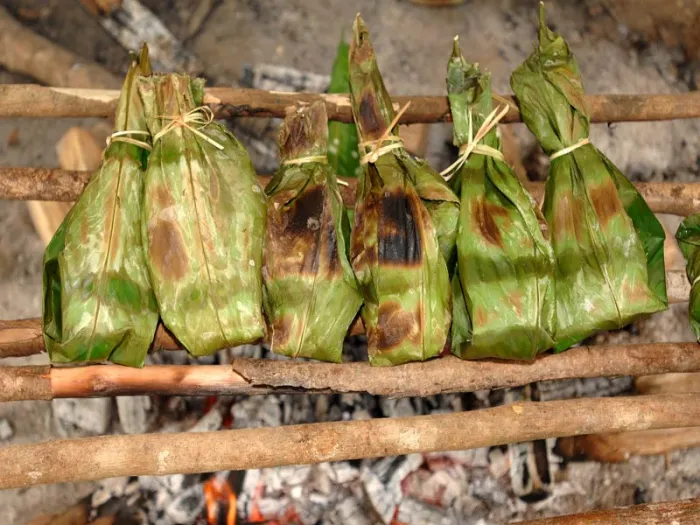
- Larvas de escarabajo que crecen en el árbol de chonta.
- Se comen asadas en palito (tipo brocheta), muy nutritivas y ricas en proteína.
- A veces se acompañan con maito o con yuca. 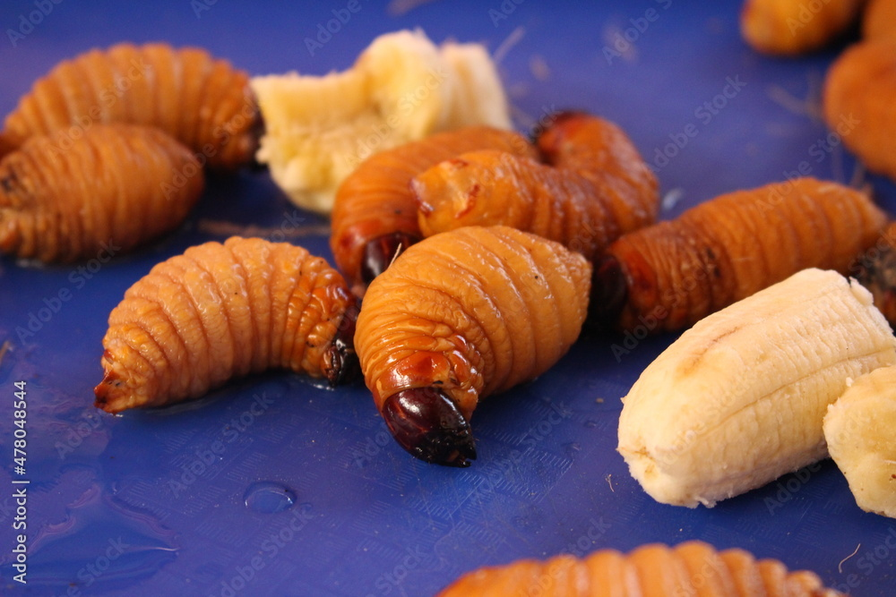
- Guiso tradicional shuar.
- Hecho con pescado, ají amazónico (uchu), yuca, palmito y especias locales.
- A menudo se cocina en hojas. 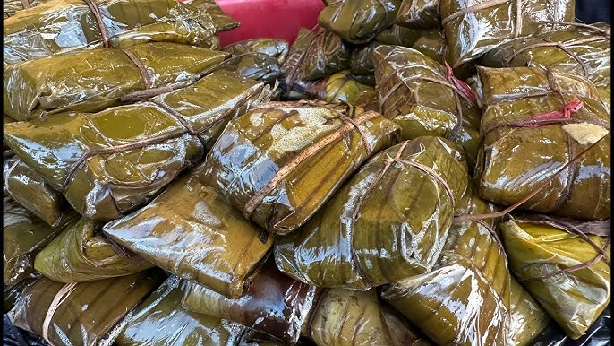
- Preparada con peces de río y acompañada de plátano verde, yuca y cilantro silvestre.
- Se cocina lentamente, a fuego de leña.
- Bebida fermentada tradicional, base de la alimentación diaria.
- Puede ser no fermentada (dulce y ligera) o fermentada (ligeramente alcohólica).
- Corazón del fruto de la palma de chonta, hervido y servido con limón, sal y a veces maní. 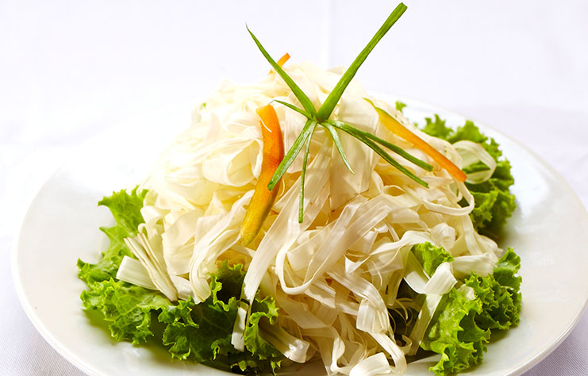
Maito
🐛 Chontacuro
🍲 Uchumanka
🍵 Sopa de pescado amazónico

🌾 Chicha de yuca o chonta

🌴 Ensalada de chonta
Bebidas tradicionales
Guayusa Hojas de la planta guayusa, Energizante natural, rica en antioxidantes.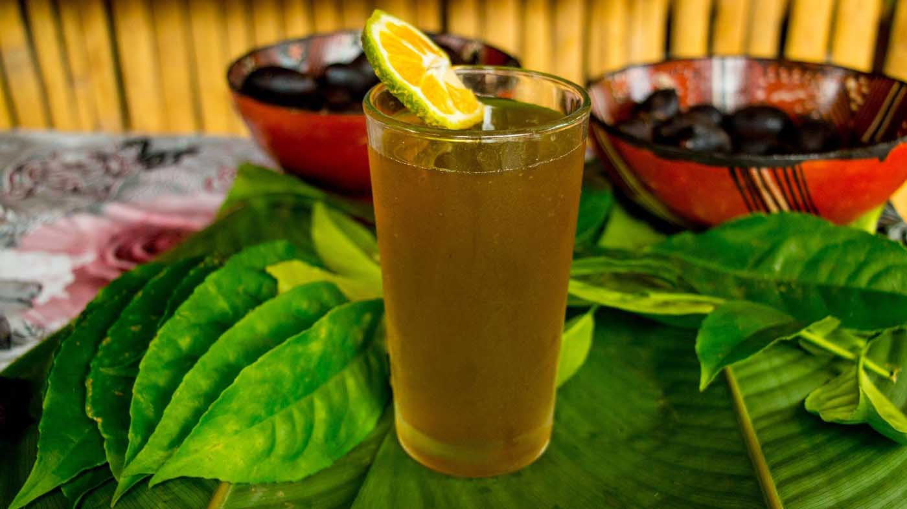 Chicha Yuca o chonta Bebida fermentada tradicional.
 Jugos Frutas amazónicas (arazá, naranjilla, copoazú) Refrescantes y nutritivos.
Jugos Frutas amazónicas (arazá, naranjilla, copoazú) Refrescantes y nutritivos.